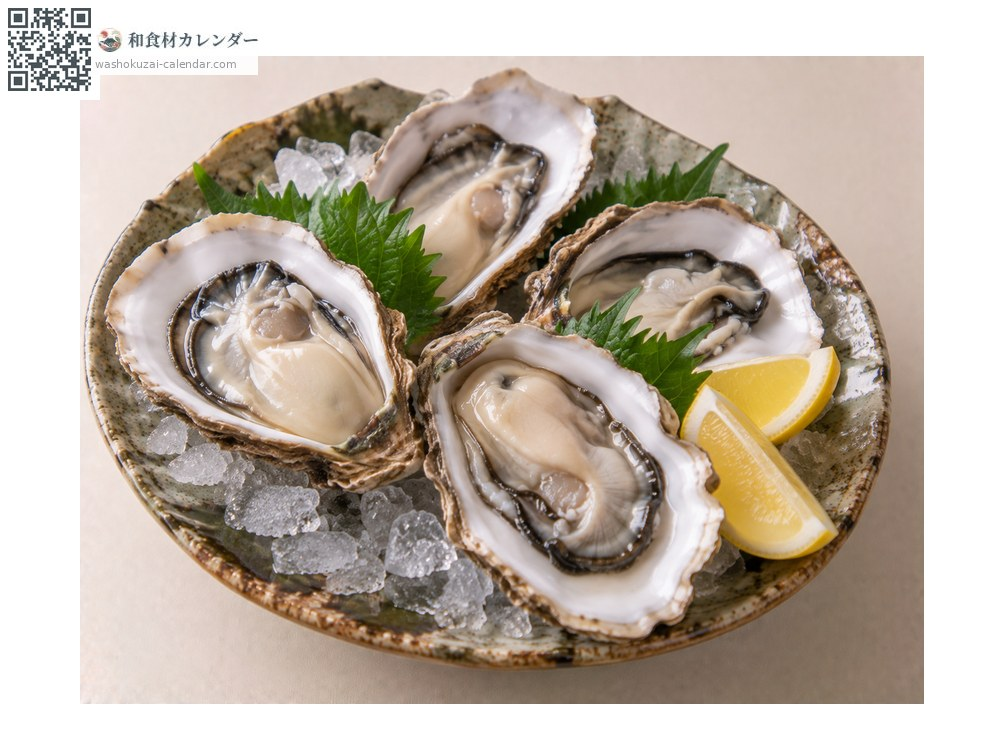
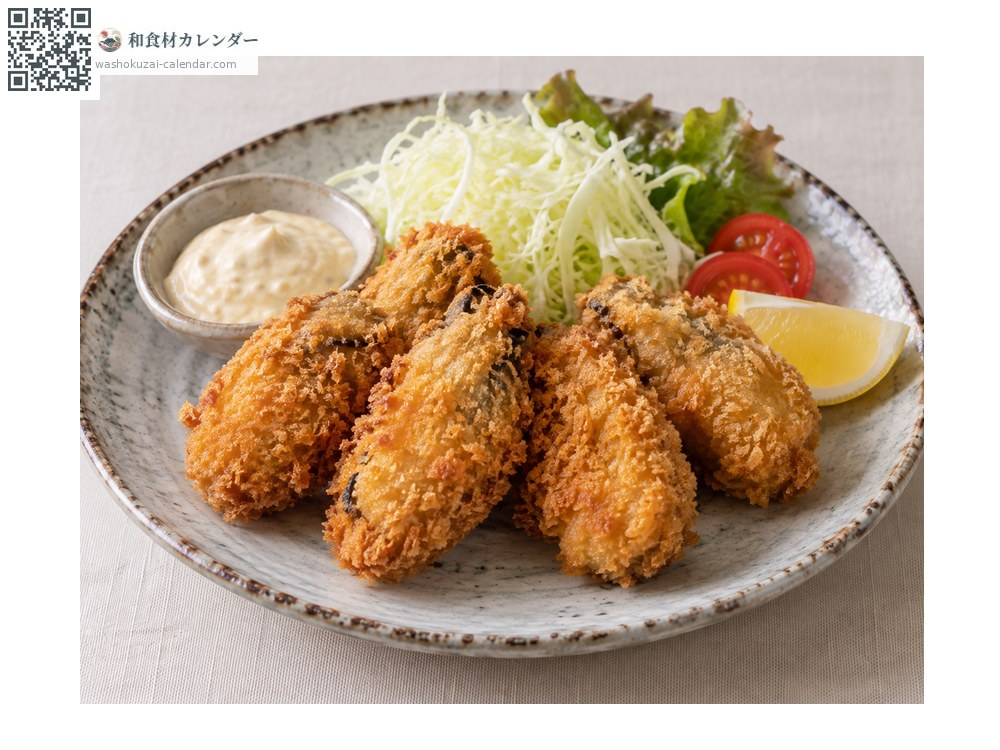
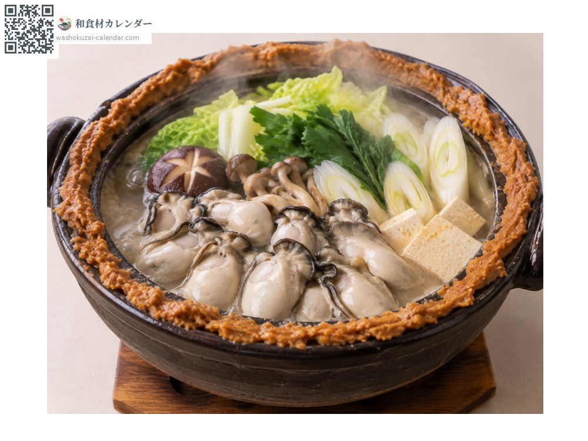
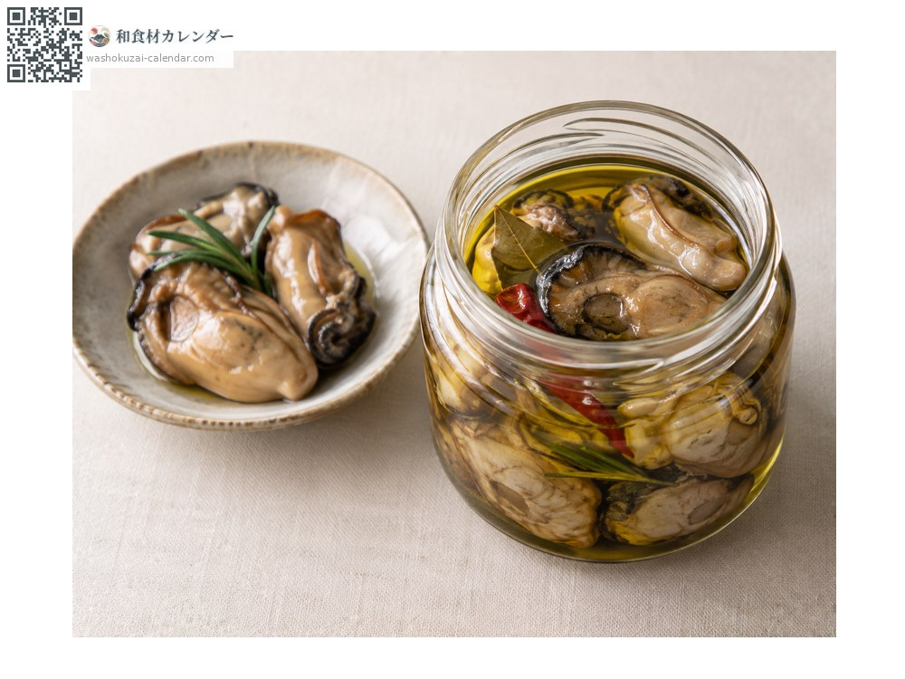

海鮮
真牡蠣
マガキ まがき magaki
別名magaki、kaki
當令時期為1月、2月、11月、12月

當令時期
1月
2月
3月
4月
5月
6月
7月
8月
9月
10月
11月
12月
當令有供應
料理方式

生蠔
擠檸檬或沾橙醋。要選標示可生食的。

炸牡蠣
裹上麵包粉油炸。

牡蠣味噌火鍋
在鍋緣抹上味噌再煮，是廣島的鄉土料理。

油漬保存
加熱後浸在油裡，可久放。
挑選方式
剝好的蠔肉要飽滿隆起、呈乳白色且有光澤。避免縮水的。
保存方式
生食用與加熱用的用途不同。即使是生食用，也要在1至2天內食用。
主要產地
小知識
有「海中牛奶」之稱。生食用與加熱用的差別不在鮮度，而在採集海域的衛生標準。